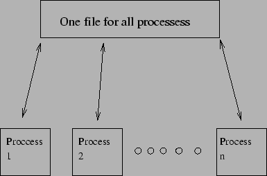
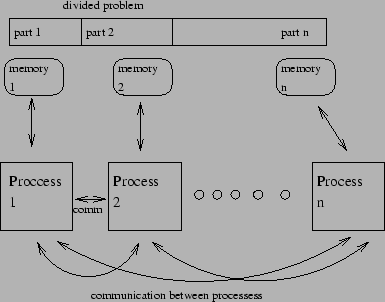
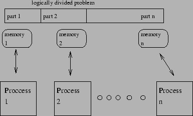

There are three most common kinds of OOC's solve models used in parallel computing: [14]
- General placement model - when the memory is available for all the processes and is stored in one BIG virtual file - figure 1
Figure 1:
General placement model
|

|
- Local placement model - every process has it's own portion of data ( own file ) in it's memory and the exchange of data is made by I/O operations ( which is unfortunately very low effective ) - figure 2
Figure 2:
Local placement model
|

|
- Partitioned-in-core model -
when we are lucky - problem can be logically divided, so the I/O operations aren't needed.
The only problem is that the processes should have as much memory as one ,,problem chunk'' needs - figure 3
Figure 3:
Partitioned-in-core placement model
|

|
Kubek2k
2005-05-09